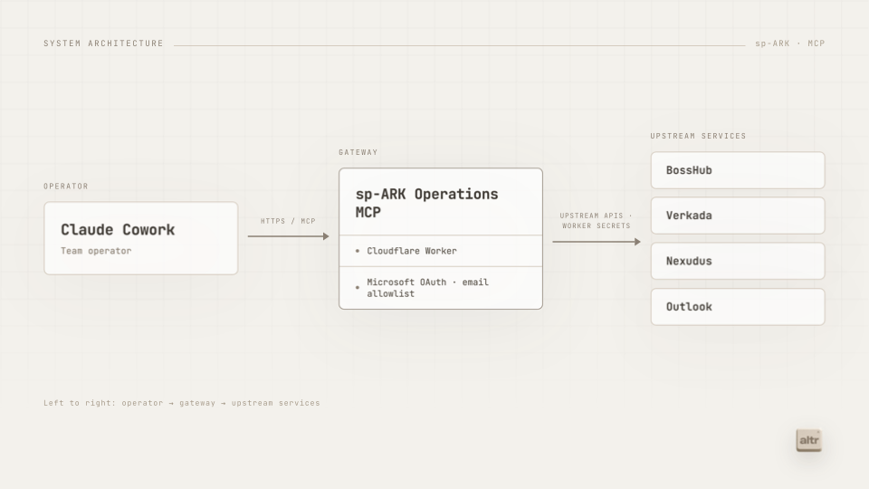
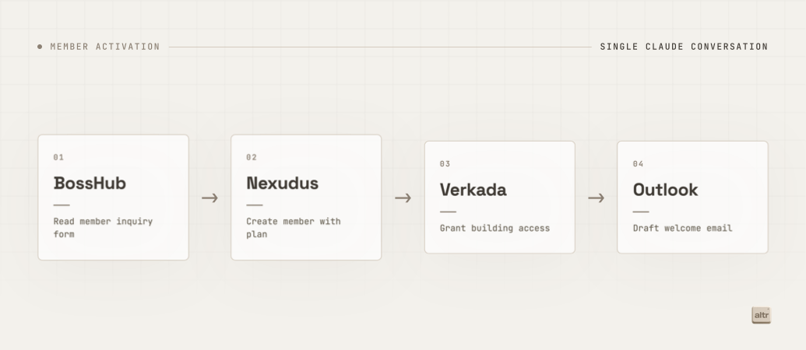

How altr built a remote MCP server to connect Claude to a startup accelerator's operations
spARK Labs by ARK Invest manages member intake, physical building access, coworking memberships, and outbound communication across four separate platforms. Getting Claude to help with any of that work meant manually copying information across systems. altr built a single remote MCP server that connects all four platforms to Claude and Claude Cowork behind a secure, Microsoft-authenticated endpoint.
Most businesses find themselves working across multiple tools. Canva for marketing, HubSpot for CRM, QuickBooks for finance. spARK Labs is similar and uses multiple software tools for different operational tasks, BossHub for intake forms, Verkada for building access control, Nexudus for membership management and room bookings, and Outlook for email. The gap was that none of those systems were connected to Claude.
Rather than building separate integrations or distributing API keys to each team member, altr deployed a single Cloudflare Worker that exposes all four systems through a secure MCP endpoint. Authentication is handled through Microsoft OAuth, team members log in with their existing Microsoft accounts, and an email allowlist ensures only authorized operators can access the tools. There is nothing to install locally, no keys to manage, and no per user setup.

BossHub: Reading form responses
The BossHub tools give Claude read access to the inquiry forms and submissions the spARK Labs team uses to track new member interest, existing member engagement, event ideas, etc. Claude can list available forms, pull recent submissions, or look up a specific inquiry by name or email. In practice, this is where a member activation workflow begins: Claude reads the submission to understand what plan was requested, what company details were provided, and what the member needs before they move in.
Verkada: Provisioning building access
The Verkada tools handle physical building access. Claude can search for an existing Verkada user by email, create a new access user, list available access groups, and add a user to the appropriate group to unlock building entry. These operations write directly to the building access system, so they are gated by both the email allowlist and a dry run flag that lets operators test the workflow without making live changes.
Nexudus: Managing memberships and bookings
Nexudus is the coworking platform that tracks members, plans, and room reservations. The tools cover both sides of operations: onboarding — looking up an existing coworker, creating a new member with the right plan assigned — and day to day management — listing available resources, creating room bookings, and canceling them when needed. Membership plans are mapped by tariff ID, so Claude can create a member record with the correct access level already in place.
Outlook: Drafting emails
The Outlook tool creates email drafts through the Microsoft Graph API. Claude composes the message and places it in the configured sender's mailbox ready to review. Nothing is sent automatically. This keeps a human in the loop on outbound communication while removing the work of composing and addressing the email from scratch.

Together, these tools let spARK Labs team members onboard new members faster, provision building access, and add new members to their CRM. The MCP server runs entirely on Cloudflare Workers and requires no local software. New team members connect in minutes by authenticating with their existing Microsoft accounts.